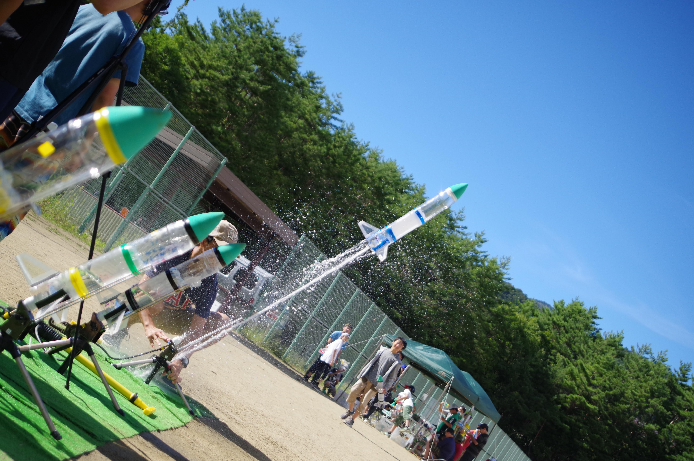
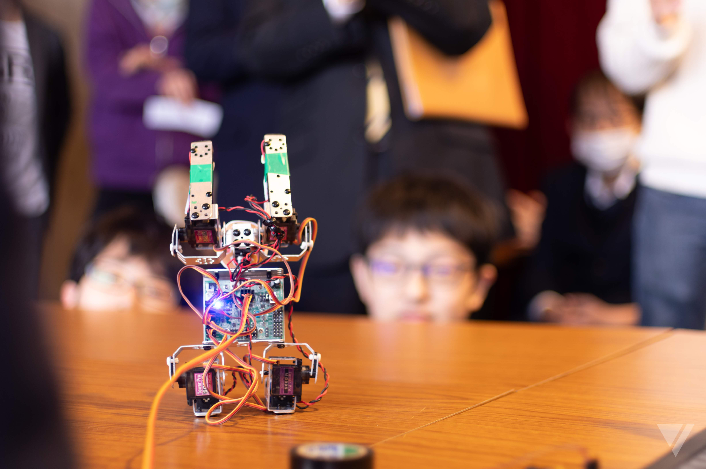

物理部では、年に2回合宿を行っています。

夏合宿
夏合宿では、ペットボトルロケットの打ち上げ実験を行っています。
物理部では、毎年違う条件でたくさんのロケットを打ち上げてその結果から物理部なりの考察をまとめます。この結果、考察を理科研究発表会で発表します。
2009年は『風と飛距離の関係』
2011年までは『おもりと飛距離の関係』
2015年までは『水量と飛距離の関係』をテーマに実験をし、よく飛ぶ条件について研究してきました。
そして、2016年から新たに『羽の面積と飛距離の関係』について実験を始めています。

春合宿
春合宿では、物理部員全員が４足歩行ロボットのプログラミングを行います。自分がプログラムをしたロボットを動かす楽しさを知ってもらい、プログラミングの楽しさを学ぶ合宿でもあります。基本的には、VisualBasic を使ってプログラミングしています。
４足歩行ロボットは、動きの複雑な『右折』『左折』『反転復帰』などを苦手としますが、一部の部員は成功させることができます。
Back to HOME